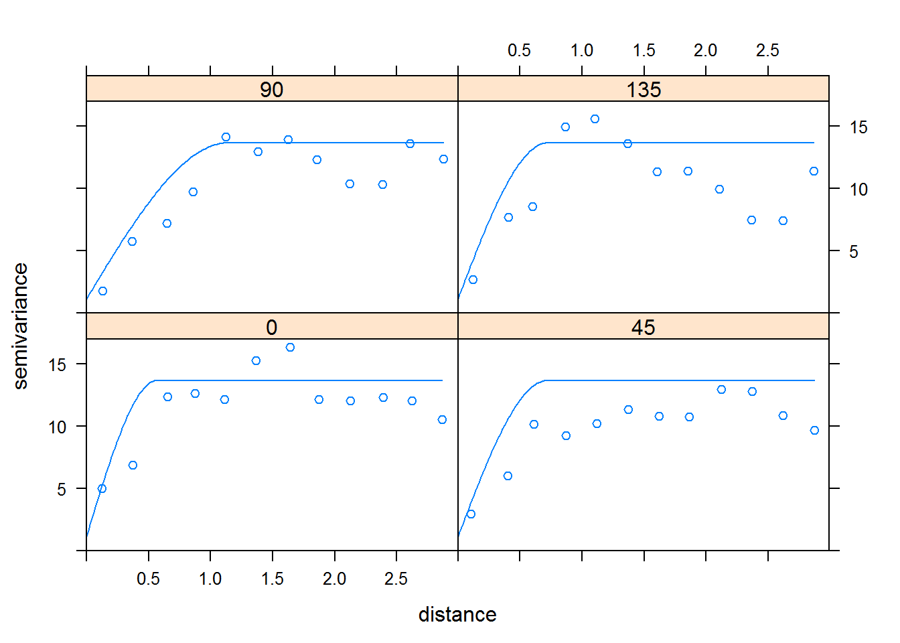

Chapter 2 Zaczynamy pracę
2.1 Niezbędne pakiety i szybki start
Aby w pełni wykonywać polecenia zainstaluj na początku pracy wszytkie poniższe pakiety za pomocą polecenia install.packages() a następnie wcztytaje je tak jak poniżej:
library(gstat)
library(sp)
library(ggplot2)Natępnym krokiem jest wczystanie danych i nadanie im koordynatów, czyli współrzędnych za pomocą pakietu sp. Niezbędny jest też proces “czyszczenia danych”, który wiąże się z usunięciem wartości odstajacych z interesującego nas zbioru danych.
!! wartości odstające - ekstrema, są to wartości zazwyczaj wynikające z jakiegoś błęgu, np. pomiarowego. Mnogość wystąpień ekstrem potrafi zdeformować informację o strukturze danych, ponieważ funkcja semiwariancji jest czuła na anomalie (ponieważ podnosimy liczby do kwadratu), więc nawet jedna taka dana zaburza wyniki.
data(jura)
dane_jura <- prediction.dat
dane_sp <- dane_jura
coordinates(dane_sp) <- ~Xloc + Yloc
tail(sort(dane_sp$Co), 30) #liczba na końcu informuje ile wartości chcemy zobaczyć## [1] 13.36 13.40 13.48 13.52 13.56 13.56 13.80 13.84 13.88 14.12 14.16
## [12] 14.20 14.20 14.24 14.32 14.32 14.36 14.48 14.60 14.60 14.64 15.08
## [23] 15.12 15.20 15.28 16.32 16.92 17.32 17.32 17.72Funkcja tail pokazuje ostatne wartości zbioru danych. Jeśli je jeszcze posortujemy używając funkcji sort, dostaniemy nie tylko końcowe wartości, ale w dodatku uszeregowane malejąco. Zatem jest to szybki sposób na zbadanie, czy w naszych danych znajdują się wartości globalnie odstające, jeśli tak, to można je usunąć tak jak poniżej, gdzie liczba 15 określa wartość, po której nasępują prawdopodobnie błędne wartości:
dane <- dane_sp[dane_sp@data$Co<15,]Kolejnym krokiem czyszczenia naszych danych jest wyelimowanie wartości pustych - NA. Tym zbiorze nie ma takich rekordów, ale jeśli będziecie mieć z takim do czynienia, za pomocą jednej linijki kodu możecie je szybko usunąć.
!! jeśli pominiecie ten krok, a w zbiorze danych pojawią się puste rekordy, to obliczenie semiwariancji będzie niemożliwe
dane_bezNA <- dane[!is.na(dane@data$Co),] 2.2 Obliczanie semiwariancji i pierwszy krok w analizie struktury przestrzennej
Skoro masz już przygotowane dane, to nic nie stoi na przeszkodzie aby z nich skorzystać i wykonać analizę struktury przestrzennej zjawiska. W tym celu pomoże nam obliczenie semiwariacji, która jest miarą niepodobieństwa - zatem rośnie wraz z odległością. Semiwariancja, to inaczej przeciwieństwo korelacji.
!! korelacja - inaczej współzależność cech, określa siłę związku między parami cech w skali od -1 do 1. <-1,0) - wzrost wartości jednej cechy wiąże się ze spadkiem drugiej, np. ilość turystów zdobywających szczyty górskie zmniejsza się ze wzrostem wysokości n.p.m. 0 - brak związku między cechami (0-1> - obie cechy rosną w tym samym czasie, np. wykorzystanie żeglugi morskiej do celów handlowych wzrosło wraz z rozpowszechnieniem map nawigacyjnych
Pierwszym krokiem jaki należy wykonać jest obliczenie wartości semiwariancji. W tym celu podajemy w funkcji variogram() kolumnę do której ma się odwołać (w tym przypadku Co) oraz zbiór danych, z których ma tę kolumnę pobrać. Za pomocą funkcji plot() możemy wyświetlić graficzną reprezentację tych obliczeń. Funkcja plot() - jest zawarta w pakiecie gstat i nie potrzebuje instalcji dodatkowego pakietu. Więcej informacji o plotcie znajdziesz np. tutaj: link
v1 <- variogram(Co~1, dane)
plot(v1)W ten sposób obliczyliśmy najprostrzą semiwariancję. Mając już jakieś pojęcie, jak wygląda semiwariogram, można go lepiej dopasować za pomocą parametrów cutoff i width. Cutoff odpowiada za zakres semiwariogramu, który wypada na osi X. Width to z kolei szerokość odstępu między próbkami.
Dobre dobranie obu parametrów, zazwyczaj odbywa się za pomocą metody prób i błędów.
v2 <- variogram(Co~1, dane, cutoff = 3, width = 0.25)
plot(v2)2.3 Modelowanie struktury przestrzennej
Mając obliczoną wartość semiwariancji można przejść do wyboru odpowiedniego modelu. Pakiet gstat oferuje, aż 20 różnych modeli, z czego 17 ma swoją reprezentację graficzną. Aby wyświetlić dostępne modele używa się funkcji show.vgms.
show.vgms()Znając wygląd naszego semiwariogramu można przejść do dopasowania modelu, bądź też modeli. W tym przypadku relatywnie dobrze pasuje model sferyczny, oznaczony tutaj jako “Sph”. W tym celu używa się funkcji vgm(), która wymaga podania:
- typu modelu (W tym przypadku “Sph”)
- psill - czyli wariancji czstąkowej, miejsca w którym semiwariogram się stabilizuje
- range - zasięg
m1 <- vgm("Sph", psill = 12.5, range = 1.6)
plot(v2,m1)Jak widać powyżej, model nie został dobrany idealnie. Można zauważyć, że jeśli by tylko model startwał wyżej (np. na wysokości wartości 1.5 na osi Y), to lepiej by się wpasował w dane. Jest to jak najbardziej możliwe, jeśli do wcześniejszej funkcji zostanie dodany parametr nugget. Nugget jest odzwierciedleniem pewnych błędóW, które zaszły podczas pobierania próbek. Jest on najczęściej wynikiem zbyt dużego “lagu”, czyli odstępu próbkowania w stosunku do zmienności zjawiska. Innymi słowy: zmienność zjawiska jest obserwowana na odległości mniejszej niż zaistniało próbkowanie.
Możliwe, że dodatkowy parametr będzie wymagał modernizacji psill czy range.
m2 <- vgm("Sph", psill = 12, range = 1.4, nugget = 1.5)
plot(v2,m2)Istnieje możliwość atomatycznego dopasowania modelu do wcześniej obliczonej semiwariancji. Odpowiednia funkcja do takiej automatyzacji to fit.variogram(), która wymaga podania zaledwie dwóch parametróW: obliczonej semiwariancji i dopasowanego modelu.
Dlaczego ta fuknkcja nazywana jest automatyczną?
Można się zastanowiać, jak funkcja, która pobiera od nas obliczoną wartość semiwariancji i dobrze dobrany model jest nazywana automatyczną, skoro wymaga podania wszystkich informacji? Otóź, funkcja fit.variogram() pozwala na prawie idealne dopasowanie z dużą dokładnością liczb po przecinku. To, jakiej jakości dostarczymy “surowe” dane, tak funkcja dopasuje nam model. Można zatem powiedzieć, że to metoda półatuomatyczna, gdzie badacz ma nadal wpływ na wynik, a jednak znacznie przyśpiesza to jego pracę.
!! na funkcję fit.variogram() ogromny wpływ ma model, który zostaje mu dostarczony jako drugi parametr!
f <- fit.variogram(v2, m2)
plot(v2,f)Jak można zauważyć, model został dopasowany znacznie lepiej.
2.4 Anizotropia i modele kierunkowe
Anizotropia, poza odległością, określa też kierunek zmian. Innymi słowy ukazuje czy w naszym zbiorze danych istnieje jakiś czynnik, który powoduje, że nasze zjawisko zmienia się dynamiczniej wraz z kierunkiem, w którym się poruszamy, np. koncentacja Co zmienia się w kierunku od SW do NE (patrz: mapa).
W celu określenia anizotropii można wygenerować mapę semiwariancji.
Aby uzyskać mapę semiwariancji, należy dodać do wcześniejszych obliczeń parametr map = TRUE. Jeśli kolory domyślej mapy są nieczytelne można je zmienić używajac parametru col.regions. Dodatkowo używając parametru threshold możemy uniknąć danych, które są wyświetlane na podstawie niereprezentatywne próbki.
!! reprezentatywne próbki- w geostatystyce aby otrzymać w pełni wiarygodną wartość semiwariancji potrzeba min. 30 par punktów (oczywiście im więcej par tym lepiej)

mapa <- variogram(Co~1, dane, cutoff = 3, width = 0.25, map = TRUE)
plot(mapa, col.regions = topo.colors(16), threshold = 30)Jeśli zależy nam na obliczeniu anizotropii w dokładnie określonym kierunku można użyć parametru anis, który definiuje kąt 0°, 45°, 90°, 135°. Każdy kąt zawiera +/- 22,50° zakresu w jedną bądź w drugą stronę.
A co z pozostałymi kątami?
Semiwariancja jest miarą lustrzaną, także nie ma potrzeby określania jej wartości dla kątów 180°, 225°, itp. bo ich wartości będą takie same jak wyniki dla kątów 0°, 45°, itp.
kier <- variogram(Co~1, dane, cutoff = 3, width = 0.25, alpha = c(0,45,90,135))
plot(kier, type = "b") #type określa sposób wyświetlania danych #b oznacza, że chcemy wyświetlić zarówno punkty, jak i linieOstatnim krokiem jest dopasowanie modelu do semiwariogramów. Nie jest to proste zadanie, z uwagi na zachodzące zajawisko anizotropii, semiwariogramy się od siebie różnią. Jest to kłopotliwe, ponieważ często typy modeli są inne, a w modelowaniu podajemy tylko jedną funkcję vgm() do wszystkich kierunków wzbogaconą o parametr alpha.
kier <- variogram(Co~1, dane, cutoff = 3, width = 0.25, alpha = c(0,45,90,135))
model_kier <- vgm("Sph", nugget =1.16 , psill =12.5, range = 1.14, anis = c(90, 0.5))
plot(kier, model_kier)
Do wyznaczania modelu, równie dobrze może posłużyć funkcja fit.variogram().
fit_kier <- fit.variogram(kier, model_kier)
plot(kier, fit_kier)
Zagadnienie anizotropii w R nie jest trudne. Natomiast poznanie jej realnych przyczyn jest już bardzo skomplikowane i zazwyczaj wymaga wiedzy eksperckiej.